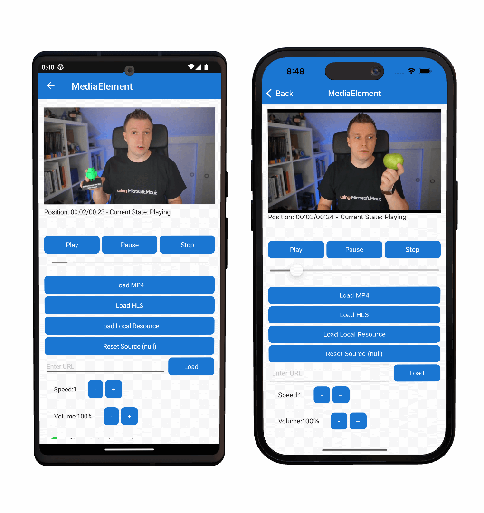

MediaElement
MediaElement is a control for playing video and audio. Media that's supported by the underlying platform can be played from the following sources:
- The web, using a URI (HTTP or HTTPS).
- A resource embedded in the platform application, using the
embed://URI scheme. - Files that come from the app's local filesystem, using the
filesystem://URI scheme.
MediaElement can use the platform playback controls, which are referred to as transport controls. However, they are disabled by default and can be replaced with your own transport controls. The following screenshots show MediaElement playing a video with the platform transport controls:

Note
MediaElement is available on iOS, Android, Windows, macOS, and Tizen.
The MediaElement uses the following platform implementations.
| Platform | Platform media player implementation |
|---|---|
| Android | ExoPlayer, big thank you to the Android Libraries maintainers! |
| iOS/macOS | AVPlayer |
| Windows | MediaPlayer |
Getting started
To use the MediaElement feature of the .NET MAUI Community Toolkit, the following steps are required.
Install NuGet package
Before you are able to use MediaElement inside your application you will need to install the CommunityToolkit.Maui.MediaElement NuGet package and add an initialization line in your MauiProgram.cs. As follows:
Package name: CommunityToolkit.Maui.MediaElement
Package url: https://www.nuget.org/packages/CommunityToolkit.Maui.MediaElement
Initializing the package
First the using statement needs to be added to the top of your MauiProgram.cs file
using CommunityToolkit.Maui.MediaElement;
In order to use the
MediaElementcorrectly theUseMauiCommunityToolkitMediaElementmethod must be called on theMauiAppBuilderclass when bootstrapping an application the MauiProgram.cs file. The following example shows how to perform this.
Important
If you require Rich Media Notifications or background playback on Android, set enableForegroundService to true when calling UseMauiCommunityToolkitMediaElement. MediaElement does not require adding additional AndroidManifest.xml permissions for the foreground service. When enableForegroundService is true, the toolkit will automatically add any required Android manifest entries for the foreground service and notifications. If you do not need background playback, you can set this to false. If you fail to call this method, an exception will be thrown when trying to use the MediaElement.
var builder = MauiApp.CreateBuilder();
builder
.UseMauiApp<App>()
.UseMauiCommunityToolkitMediaElement(enableForegroundService: true); // Set to `false` if Rich Notifications and background playback is not required
For more information on how to do this, please refer to the Get Started page.
Platform specific initialization
To access the MediaElement functionality, the following platform specific setup is required.
When using MediaElement it is essential to perform the following steps:
1. Add ResizableActivity and Launchmode to Activity
[Activity(Theme = "@style/Maui.SplashTheme", ResizeableActivity = true, MainLauncher = true, LaunchMode = LaunchMode.SingleTask)]
public class MainActivity : MauiAppCompatActivity
{
}
For a full example of this method included in an application please refer to the .NET MAUI Community Toolkit Sample Application
Supported Formats
The supported multimedia formats can be different per platform. In some cases it can even be dependant on what decoders are available or installed on the operating system that is used while running your app. For more detailed information on which formats are supported on each platform, please refer to the links below.
| Platform | Link | Notes |
|---|---|---|
| Android | ExoPlayer Supported Formats | |
| iOS/macOS | iOS/macOS Supported Formats | No official documentation on this exists |
| Windows | Windows Supported Formats | On Windows the supported formats are very much dependent on what codecs are installed on the user's machine |
| Tizen | Tizen Supported Formats |
Important
If the user is using a Windows N edition, no video playback is supported by default. Windows N editions have no video playback formats installed by design.
Common scenarios
The following sections covers common usage scenarios for the MediaElement.
Play remote media
A MediaElement can play remote media files using the HTTP and HTTPS URI schemes. This is accomplished by setting the Source property to the URI of the media file:
<toolkit:MediaElement Source="https://commondatastorage.googleapis.com/gtv-videos-bucket/sample/BigBuckBunny.mp4"
ShouldShowPlaybackControls="True" />
Important
When playing remote sources from HTTP endpoints, you will likely need to disable operating system security measures that prevent access to insecure web endpoints. This is true for at least iOS and Android.
By default, the media that is defined by the Source property doesn't immediately start playing after the media is opened. To enable automatic media playback, set the ShouldAutoPlay property to true.
Platform provided media playback controls are enabled by default, and can be disabled by setting the ShouldShowPlaybackControls property to false.
Use Rich Media Notifications
A MediaElement can show rich media notifications on Android, iOS, Mac Catalyst, and Windows when media is playing in the background. To enable rich media notifications, the following steps are required:
- Enable background video playback by setting the
enableForegroundServiceparameter totruewhen calling theUseMauiCommunityToolkitMediaElementmethod in MauiProgram.cs. Refer to the Initializing the package section above for more information. - Platform specific setup as described in the Platform specific initialization section.
- Set the
MetadataTitle,MetadataArtist, andMetadataArtworkUrlproperties to provide metadata for the media that is playing as described in the Using Metadata section.
Foreground service on Android
To enable background playback on Android, set the enableForegroundService parameter to true when calling the UseMauiCommunityToolkitMediaElement method in MauiProgram.cs. MediaElement does not require adding additional AndroidManifest.xml permissions for the foreground service — calling the builder method with enableForegroundService: true is sufficient to enable notification and background playback features. When enableForegroundService is true, the toolkit will automatically add any required Android manifest entries for the foreground service and notifications. If enableForegroundService is false and you attempt to use background playback features, an exception may be thrown on Android.
Using Metadata
A MediaElement can use metadata for MediaElement.MetadataTitle, MediaElement.MetadataArtist and MediaElement.MetadataArtworkUrl. You can set
the title or artist to show what is currently playing on lockscreen controls for Windows, Mac Catalyst, iOS, and Android. You can set a local or
remote URL with artwork for the lockscreen. It should be at least 1080P for best quality to be displayed. It must be a URL and be either .jpg or
.png
<toolkit:MediaElement
MetadataTitle="Title"
MetadataArtist="Artist"
MetadataArtworkUrl="http://www.myownpersonaldomain.com/image.jpg" />
MediaElement.MetadataTitle="Title";
MediaElement.MetadataArtist="Artist";
MediaElement.MetadataArtworkUrl="http://www.myownpersonaldomain.com/image.jpg";
Important
You can set the metadata in either XAML or code behind. If you are setting it in code behind you need to set the source in code behind. The source should be set last. If you set the metadata in XAML or in constructor this note can be safely ignored.
Using TextureView
A MediaElement can use TextureView on Android Platform. The platform default behavior is to use SurfaceView. Using Texture View adds support
to allow transparencies and other effects. This is set by changing the builder to use
.UseMauiCommunityToolkitMediaElement(static options =>
{
options.SetDefaultAndroidViewType(AndroidViewType.TextureView);
})
You can set TextureView for each media element you use as well. It can be set in XAML and codebehind. Using it this way will override the builder command .UseMauiCommunityToolkitMediaElement().
var mediaElement = new MediaElement
{
AndroidViewType = AndroidViewType.TextureView
}
<toolkit:MediaElement AndroidViewType="TextureView" />
Important
We do not recommend using TextureView unless you have a specific need for it. It has possible performance related issues if enabled and is recommended only for those that need transparencies and other advanced features.
Play local media
Local media can be played from the following sources:
- A resource embedded in the platform application, using the
embed://URI scheme. - Files that come from the app's local filesystem, using the
filesystem://URI scheme.
Note
The shorthand embed:// and filesystem:// only work from XAML. In code, please use MediaSource.FromResource() and MediaSource.FromFile() respectively. Using these methods, you can omit the the embed:// and filesystem:// prefixes. The rest of the path should be the same.
Play media embedded in the app package
A MediaElement can play media files that are embedded in the app package, using the embed:// URI scheme. Media files are embedded in the app package by placing them in the platform project.
To enable a media file for playback from the local resources add the file to the Resources/Raw folder of your .NET MAUI project. When a file is added in the root, the URI would be embed://MyFile.mp4.
You can also place files in sub folders. If MyFile.mp4 would be in Resources/Raw/MyVideos then the URI to use it with MediaElement would be embed://MyVideos/MyFile.mp4.
An example of how to use this syntax in XAML can be seen below.
<toolkit:MediaElement Source="embed://MyFile.mp4"
ShouldShowPlaybackControls="True" />
Understand MediaSource types
A MediaElement can play media by setting its Source property to a remote or local media file. The Source property is of type MediaSource, and this class defines three static methods:
FromFile, returns aFileMediaSourceinstance from astringargument.FromUri, returns aUriMediaSourceinstance from aUriargument.FromResource, returns aResourceMediaSourceinstance from astringargument.
In addition, the MediaSource class also has implicit operators that return MediaSource instances from string and Uri arguments.
Note
When the Source property is set in XAML, a type converter is invoked to return a MediaSource instance from a string or Uri.
The MediaSource class also has these derived classes:
FileMediaSource, which is used to specify a local media file from astring. This class has aPathproperty that can be set to astring. In addition, this class has implicit operators to convert astringto aFileMediaSourceobject, and aFileMediaSourceobject to astring.UriMediaSource, which is used to specify a remote media file from a URI. This class has aUriproperty that can be set to aUri.ResourceMediaSource, which is used to specify an embedded file that is provided through the app's resource files. This class has aPathproperty that can be set to astring.
Note
When a FileMediaSource object is created in XAML, a type converter is invoked to return a FileMediaSource instance from a string.
Change video aspect ratio
The Aspect property determines how video media will be scaled to fit the display area. By default, this property is set to the AspectFit enumeration member, but it can be set to any of the Aspect enumeration members:
AspectFitindicates that the video will be letterboxed, if required, to fit into the display area, while preserving the aspect ratio.AspectFillindicates that the video will be clipped so that it fills the display area, while preserving the aspect ratio.Fillindicates that the video will be stretched to fill the display area.
Determine MediaElement status
The MediaElement class defines a read-only bindable property named CurrentState, of type MediaElementState. This property indicates the current status of the control, such as whether the media is playing or paused, or if it's not yet ready to play the media.
The MediaElementState enumeration defines the following members:
Noneindicates that theMediaElementcontains no media.Openingindicates that theMediaElementis validating and attempting to load the specified source.Bufferingindicates that theMediaElementis loading the media for playback. ItsPositionproperty does not advance during this state. If theMediaElementwas playing video, it continues to display the last displayed frame.Playingindicates that theMediaElementis playing the media source.Pausedindicates that theMediaElementdoes not advance itsPositionproperty. If theMediaElementwas playing video, it continues to display the current frame.Stoppedindicates that theMediaElementcontains media but it is not being played or paused. ItsPositionproperty is reset to 0 and does not advance.Failedindicates that theMediaElementfailed to load or play the media. This can occur while trying to load a new media item, when attempting to play the media item or when the media playback is interrupted due to a failure. Use theMediaFailedevent to retrieve additional details.
It's generally not necessary to examine the CurrentState property when using the MediaElement transport controls. However, this property becomes important when implementing your own transport controls.
Implement custom transport controls
The transport controls of a media player include the buttons that perform the functions Play, Pause, and Stop. These buttons are generally identified with familiar icons rather than text, and the Play and Pause functions are generally combined into one button.
By default, the MediaElement playback controls are disabled. This enables you to control the MediaElement programmatically, or by supplying your own transport controls. In support of this, MediaElement includes Play, Pause, and Stop methods.
The following XAML example shows a page that contains a MediaElement and custom transport controls:
<ContentPage xmlns="http://schemas.microsoft.com/dotnet/2021/maui"
xmlns:x="http://schemas.microsoft.com/winfx/2009/xaml"
xmlns:toolkit="http://schemas.microsoft.com/dotnet/2022/maui/toolkit"
x:Class="MediaElementDemos.CustomTransportPage"
Title="Custom transport">
<Grid>
...
<toolkit:MediaElement x:Name="mediaElement"
ShouldAutoPlay="False"
... />
<HorizontalStackLayout BindingContext="{x:Reference mediaElement}"
...>
<Button Text="Play"
HorizontalOptions="Center"
Clicked="OnPlayPauseButtonClicked">
<Button.Triggers>
<DataTrigger TargetType="Button"
Binding="{Binding CurrentState}"
Value="{x:Static toolkit:MediaElementState.Playing}">
<Setter Property="Text"
Value="Pause" />
</DataTrigger>
<DataTrigger TargetType="Button"
Binding="{Binding CurrentState}"
Value="{x:Static toolkit:MediaElementState.Buffering}">
<Setter Property="IsEnabled"
Value="False" />
</DataTrigger>
</Button.Triggers>
</Button>
<Button Text="Stop"
HorizontalOptions="Center"
Clicked="OnStopButtonClicked">
<Button.Triggers>
<DataTrigger TargetType="Button"
Binding="{Binding CurrentState}"
Value="{x:Static toolkit:MediaElementState.Stopped}">
<Setter Property="IsEnabled"
Value="False" />
</DataTrigger>
</Button.Triggers>
</Button>
</HorizontalStackLayout>
</Grid>
</ContentPage>
In this example, the custom transport controls are defined as Button objects. However, there are only two Button objects, with the first Button representing Play and Pause, and the second Button representing Stop. DataTrigger objects are used to enable and disable the buttons, and to switch the first button between Play and Pause. For more information about data triggers, see .NET MAUI Triggers.
The code-behind file has the handlers for the Clicked events:
void OnPlayPauseButtonClicked(object sender, EventArgs args)
{
if (mediaElement.CurrentState == MediaElementState.Stopped ||
mediaElement.CurrentState == MediaElementState.Paused)
{
mediaElement.Play();
}
else if (mediaElement.CurrentState == MediaElementState.Playing)
{
mediaElement.Pause();
}
}
void OnStopButtonClicked(object sender, EventArgs args)
{
mediaElement.Stop();
}
The Play button can be pressed, once it becomes enabled, to begin playback. Pressing the Pause button results in playback pausing. Pressing the Stop button stops playback and returns the position of the media file to the beginning.
Implement a custom volume control
Media playback controls implemented by each platform include a volume bar. This bar resembles a slider and shows the volume of the media. In addition, you can manipulate the volume bar to increase or decrease the volume.
A custom volume bar can be implemented using a Slider, as shown in the following example:
<StackLayout>
<toolkit:MediaElement ShouldAutoPlay="False"
Source="{StaticResource AdvancedAsync}" />
<Slider Maximum="1.0"
Minimum="0.0"
Value="{Binding Volume}"
Rotation="270"
WidthRequest="100" />
</StackLayout>
In this example, the Slider data binds its Value property to the Volume property of the MediaElement. This is possible because the Volume property uses a TwoWay binding. Therefore, changing the Value property will result in the Volume property changing.
Note
The Volume property has a validation callback that ensures that its value is greater than or equal to 0.0, and less than or equal to 1.0.
For more information about using a Slider see, .NET MAUI Slider
Properties
| Property | Type | Description | Default Value |
|---|---|---|---|
| Aspect | Aspect | Determines the scaling mode for the (visual) media that is currently loaded. This is a bindable property. | Aspect.AspectFit |
| CurrentState | MediaElementState |
Indicates the current status of the control. This is a read-only, bindable property. | MediaElementState.None |
| Duration | TimeSpan |
Indicates the duration of the currently opened media. This is a read-only, bindable property. | TimeSpan.Zero |
| Position | TimeSpan |
Describes the current progress through the media's playback time. This is a read-only, bindable property. If you want to set the Position use the SeekTo() method. |
TimeSpan.Zero |
| ShouldAutoPlay | bool |
Indicates whether media playback will begin automatically when the Source property is set. This is a bindable property. |
false |
| ShouldLoopPlayback | bool |
Describes whether the currently loaded media source should resume playback from the start after reaching its end. This is a bindable property. | false |
| ShouldKeepScreenOn | bool |
Determines whether the device screen should stay on during media playback. This is a bindable property. | false |
| ShouldMute | bool |
Determines whether the audio is currently muted. This is a bindable property. | false |
| ShouldShowPlaybackControls | bool |
Determines whether the platforms playback controls are displayed. This is a bindable property. Note that on iOS and Windows the controls are only shown for a brief period after interacting with the screen. There is no way of keeping the controls visible at all times. | true |
| Source | MediaSource? |
The source of the media loaded into the control. | null |
| Speed | double |
Determines the playback speed of the media. This is a bindable property | 1 |
| MediaHeight | int |
The height of the loaded media in pixels. This is a read-only, bindable property. Not reported for non-visual media and might not always be populated on iOS/macOS for live streamed content. | 0 |
| MediaWidth | int |
The width of the loaded media in pixels. This is a read-only, bindable property. Not reported for non-visual media and might not always be populated on iOS/macOS for live streamed content. | 0 |
| Volume | double |
Determines the media's volume, which is represented on a linear scale between 0 and 1. This is a bindable property. | 1 |
Events
| Event | Description |
|---|---|
| MediaOpened | Occurs when the media stream has been validated and opened. |
| MediaEnded | Occurs when the MediaElement finishes playing its media. |
| MediaFailed | Occurs when there's an error associated with the media source. |
| PositionChanged | Occurs when the Position property value has changed. |
| SeekCompleted | Occurs when the seek point of a requested seek operation is ready for playback. |
Methods
| Event | Description |
|---|---|
| Play | Starts playing the loaded media. |
| Pause | Pauses playback of the current media. |
| Stop | Stops playback and resets the position of the current media. |
| SeekTo | Takes a TimeSpan value to set the Position property to and takes a CancellationToken to cancel the Task. |
Examples
You can find examples of this control in action in the .NET MAUI Community Toolkit Sample Application.
API
You can find the source code for MediaElement over on the .NET MAUI Community Toolkit GitHub repository.